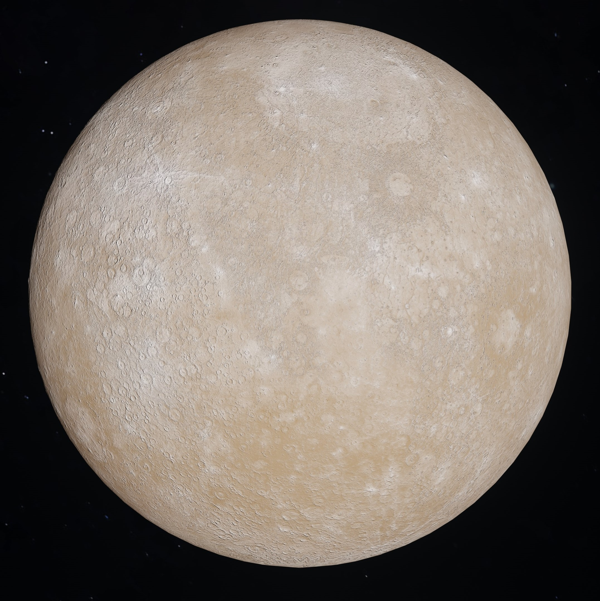
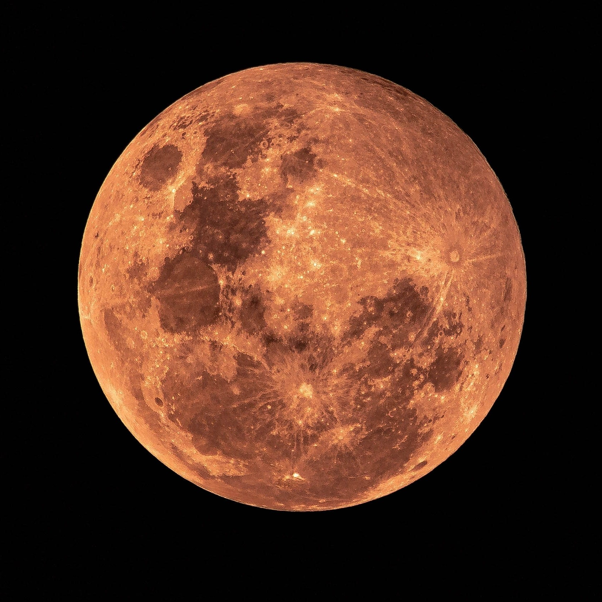
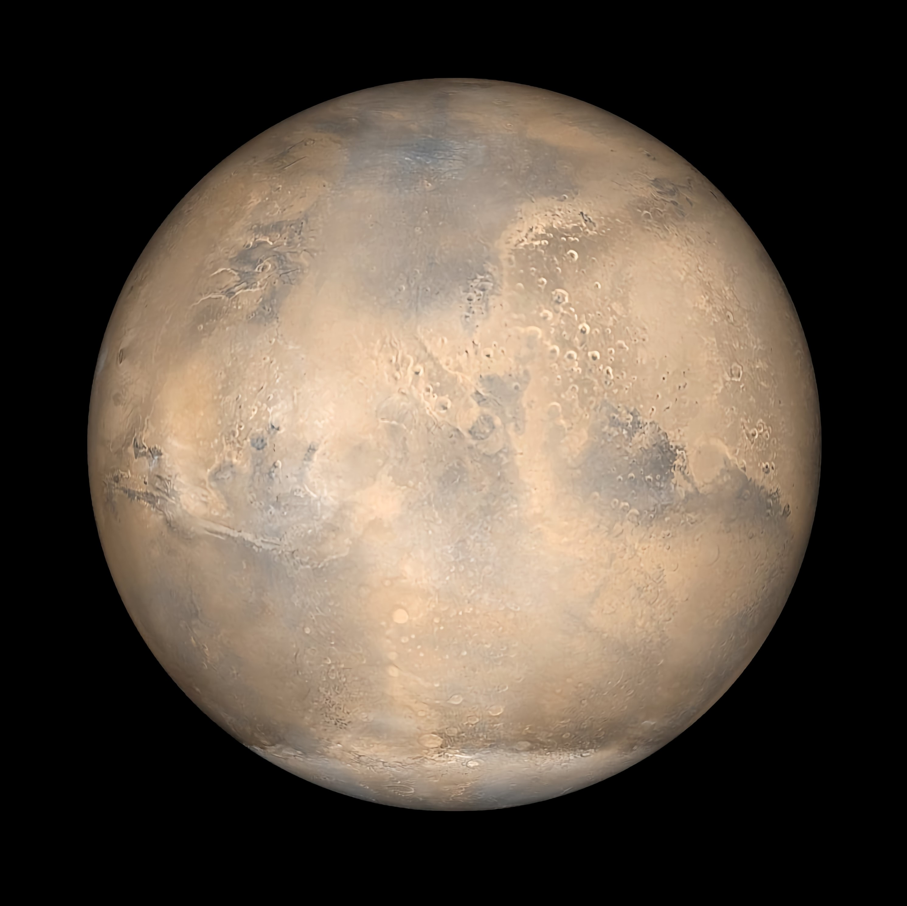
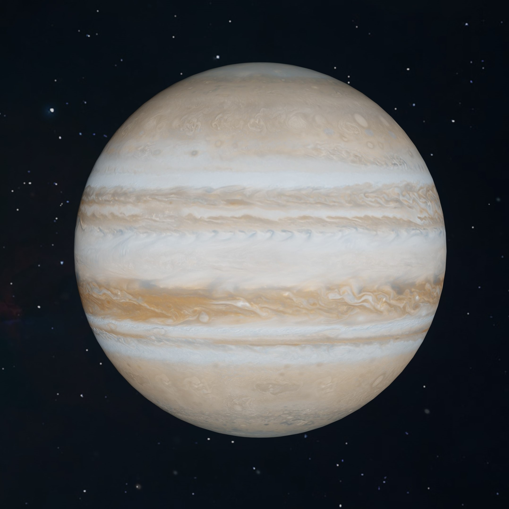
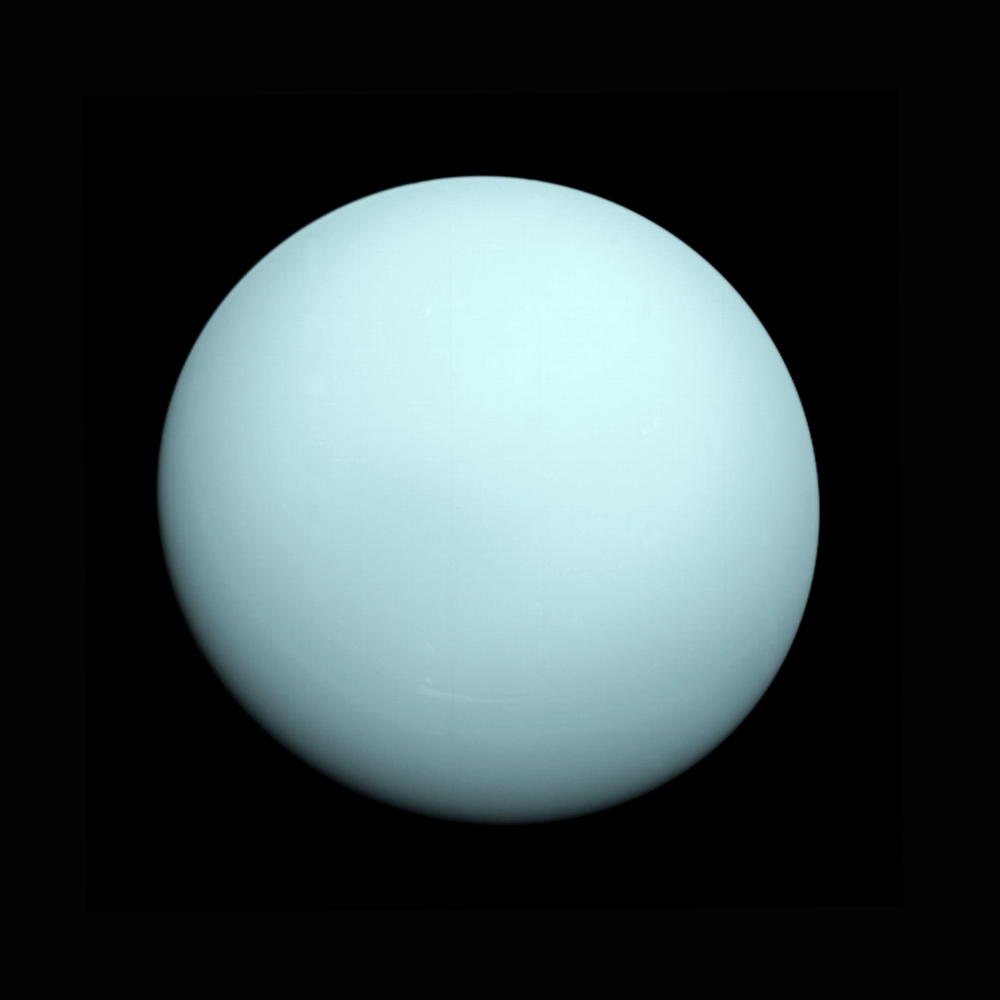
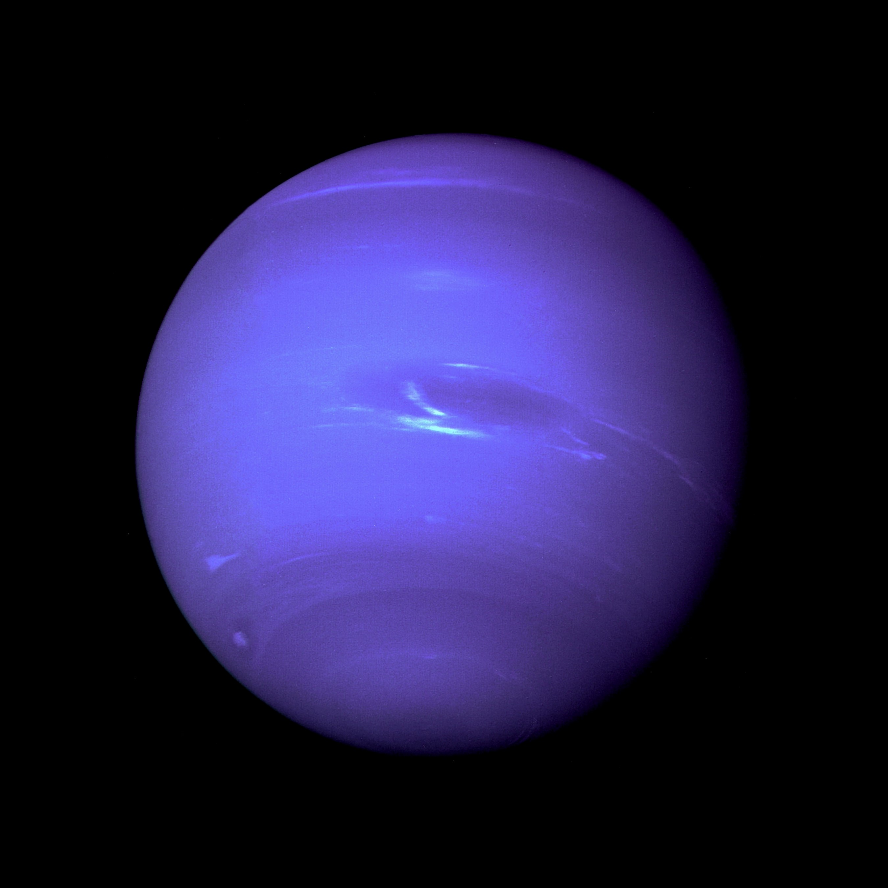
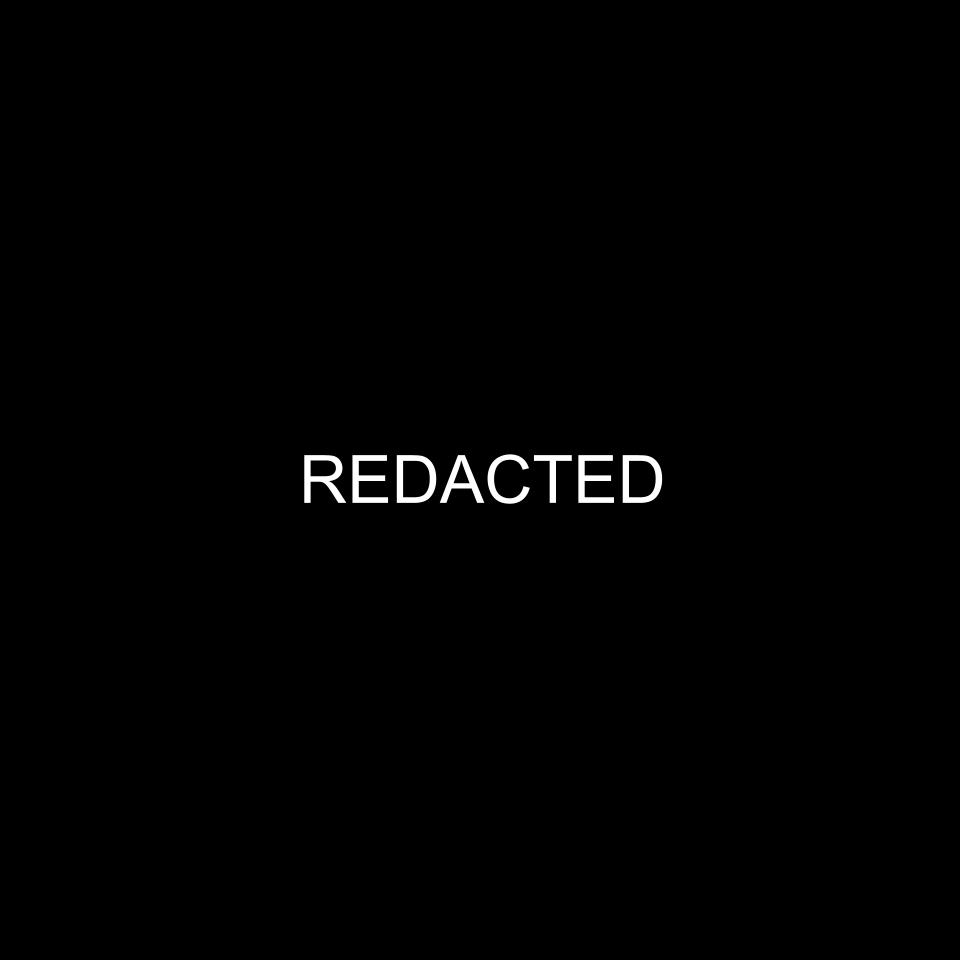

Planets
Click Homepage to go back to the Homepage!
Order of planets from closest to the sun from furthest to the sun.
Mercury
By ZHC, Planet Mercury in Full Shot Photography, Pexels.com, Free to use
;
Description: Mercury is the smallest planet in our solar system, and it is also the closest to the sun.
- 36.04 million miles away from the sun
- Surface gravity of 3.7 m/s²
- Size is 1,516 miles
- Oribital period takes 88 Earth days
- Length of day is 58d 15h 30m
Venus
By ZHC, Venus in Black Background, Pexels.com, Free to use
;
Description: Venus is the second planet from the sun. Venus is named after the Roman goddess of love and beauty.
- 67.24 million miles away from the sun
- Surface gravity of 8.87 m/s²
- Size is 3,760.4 miles
- Orbital period takes 225 days
- Length of day is 116d 18h
Earth
By Pixabay, Planet Earth, Pexels.com, Free to use
 ;
;
Description: Third planet from the sun. The only planet know to harbor life.
- 92.96 million miles away from the sun
- Surface gravity of 9.807 m/s²
- Size is 3,958.8 miles
- Orbital period takes 365 days
- Length of day is 24 hours
Mars
By NASAm A simulated view of Mars as it would be seen from the Mars Global Surveyor spacecraft, Unsplash.com, Free to use
;
Description: Fourth planet from the sun. Second-smallest planet in the solar system.
- 141.6 million miles away from the sun
- Surface gravity of 3.721 m/s²
- Size is 2,106.1 miles
- Orbital period takes 687 days
- Length of day is 1d 37m
- Big, red, and kicking ass
Jupiter
By ZHC, Planet Jupiter, Pexels.com, Free to use

Description: Fifth planet from the sun. Largest planet is the solar system.
- 483.8 million miles away from the sun
- Surface gravity of 24.79 m/s²
- Size is 43,41 miles
- Orbital period takes 12 years
- Length of day is 9h 56m
Saturn
By ZHC, Plane Saturn in Graphic Illustration, Pexels.com, Free to use

Description: Sixth planet from the sun. Second largest planet in the solar system.
- 890.8 million miles away from the sun
\
- Surface gravity of 10.44 m/s²
- Size is 36,184 miles
- Orbital period takes 29 years
- Length of day is 10h 34m
Uranus
By NASA, Uranus as seen by Voyager 2, Unslpash.com, Free to use

Description: Seventh planet from the sun. Named after the greek god of the sky.
- 1.784 billion miles away from the sun
- Surface gravity of 8.87 m/s²
- Size is 16,759 miles
- Orbital period takes 84 years
- Length of day is 17h 14m
- Can't grow up.
Neptune
By NASA, Neptune as seen from Voyager 2 from 4.4 million miles, Unslpash.com, Free to use

Description: Eighth planet away from the sun. Farthest known solar planet.
- 2.793 billion miles away from the sun
- Surface gravity of 11.15 m/s²
- Size is 15,299 miles
- Orbital period takes 165 years
- Length of day is 16h 6m
REDACTED

REDACTED
- REDACTED
- REDACTED
- REDACTED
- REDACTED
- REDACTED
Links